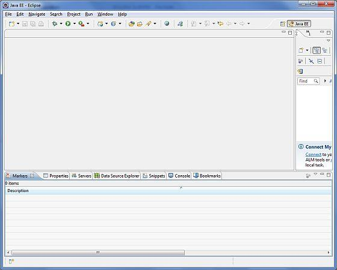

Android
Environment Setup
You will be glad to know that you can
start your Android application development on either of the following operating
systems:
Second point is that all the required
tools to develop Android applications are freely available and can be
downloaded from the Web. Following is the list of software's you will need
before you start your Android application programming.
Here last two components are optional
and if you are working on Windows machine then these components make your life
easy while doing Java based application development. So let us have a look how
to proceed to set required environment.
Step 1 - Setup
Java Development Kit (JDK)
You can download the latest version of
Java JDK from Oracle's Java site: Java SE Downloads. You will find instructions for
installing JDK in downloaded files, follow the given instructions to install
and configure the setup. Finally set PATH and JAVA_HOME environment variables
to refer to the directory that contains java and javac,
typically java_install_dir/bin and java_install_dir respectively.
If you are running Windows and installed
the JDK in C:\jdk1.6.0_15, you would have to put the following line in your
C:\autoexec.bat file.
set
PATH=C:\jdk1.6.0_15\bin;%PATH%
set JAVA_HOME=C:\jdk1.6.0_15
Alternatively, you could also
right-click on My Computer, select Properties, then Advanced,
then Environment Variables. Then, you would update the PATH value and
press the OK button.
On Linux, if the SDK is installed in /usr/local/jdk1.6.0_15 and you use the C shell, you would
put the following code into your .cshrc file.
setenv PATH /usr/local/jdk1.6.0_15/bin:$PATH
setenv JAVA_HOME /usr/local/jdk1.6.0_15
Alternatively, if you use an Integrated
Development Environment (IDE) Eclipse, then it will know automatically where
you have installed your Java.
Step 2 - Setup
Android SDK
You can download the latest version of
Android SDK from Android official website: Android SDK
Downloads. If you are installing SDK on Windows machine, then you will find
an installer_rXX-windows.exe, so just download and run this exe which
will launch Android SDK Tool Setup wizard to guide you through out of
the installation, so just follow the instructions carefully. Finally you will
have Android SDK Tools installed on your machine.
If you are installing SDK either on Mac
OS or Linux, check the instructions provided along with the downloaded android-sdk_rXX-macosx.zip
file for Mac OS and android-sdk_rXX-linux.tgz file for Linux. This
tutorial will consider that you are going to setup your environment on Windows
machine having Windows 7 operating system.
So let's launch Android SDK Manager
using the option All Programs > Android SDK Tools > SDK Manager,
this will give you following window:
Once you launched SDK manager, it’s time
to install other required packages. By default it will list down total 7
packages to be installed, but I will suggest to de-select Documentation for
Android SDK and Samples for SDK packages to reduce installation
time. Next click Install 7 Packages button to proceed, which will
display following dialogue box:
If you agree to install all the packages,
select Accept All radio button and proceed by clicking Install
button. Now let SDK manager do its work and you go, pick up a cup of coffee and
wait until all the packages are installed. It may take some time depending on
your internet connection. Once all the packages are installed, you can close
SDK manager using top-right cross button.
Step 3 - Setup
Eclipse IDE
All the examples in this tutorial have
been written using Eclipse IDE. So I would suggest you should have latest
version of Eclipse installed on your machine.
To install Eclipse IDE, download the
latest Eclipse binaries from http://www.eclipse.org/downloads/. Once you downloaded the
installation, unpack the binary distribution into a convenient location. For
example in C:\eclipse on windows, or /usr/local/eclipse
on Linux and finally set PATH variable appropriately.
Eclipse can be started by executing the
following commands on windows machine, or you can simply double click on eclipse.exe
%C:\eclipse\eclipse.exe
Eclipse can be started by executing the
following commands on Linux machine:
$/usr/local/eclipse/eclipse
After a successful startup, if
everything is fine then it should display following result:

Step 4 - Setup
Android Development Tools (ADT) Plugin
This step will help you in setting
Android Development Tool plugin for Eclipse. Let's start with launching Eclipse
and then, choose Help > Software Updates > Install New Software.
This will display the following dialogue box.
Now use Add button to add ADT
Plugin as name and https://dl-ssl.google.com/android/eclipse/ as the
location. Then click OK to add this location, as soon as you will click OK button
to add this location, Eclipse starts searching for the plug-in available the
given location and finally lists down the found plugins.
Now select all the listed plug-ins using
Select All button and click Next button which will guide you
ahead to install Android Development Tools and other required plugins.
Step 5 -
Create Android Virtual Device
To test your Android applications you
will need a virtual Android device. So before we start writing our code, let us
create an Android virtual device. Launch Android AVD Manager using Eclipse menu
options Window > AVD Manager> which will launch Android AVD
Manager. Use New button to create a new Android
Virtual Device and enter the following information, before clicking Create
AVD button.
If your AVD is created successfully it
means your environment is ready for Android application development. If you
like, you can close this window using top-right cross button. Better you
re-start your machine and once you are done with this last step, you are ready
to proceed for your first Android example but before that we will see few more
important concepts related to Android Application Development.